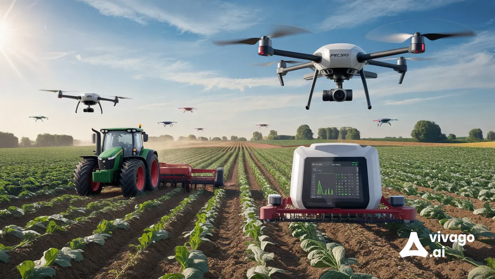

What is Precision Farming?

Precision farming, also known as precision agriculture, is a farming management concept that uses information technology and various data sources to ensure that crops and soil receive exactly what they need for optimum health and productivity. This approach leverages tools such as GPS, IoT sensors, and data analytics to enhance farming efficiency and reduce waste.
Importance of Precision Farming
Precision farming is essential for several reasons:
- Resource Efficiency: It minimizes the use of water, fertilizers, and pesticides, leading to cost savings and reduced environmental impact.
- Increased Yields: By optimizing inputs based on specific crop needs, farmers can increase their yields significantly.
- Sustainability: Precision agriculture supports sustainable practices that help protect the environment while ensuring food security.
Uses of Precision Farming
Precision farming can be utilized in various ways, including:
- Soil Health Monitoring: Analyzing soil properties to tailor nutrient applications effectively.
- Variable Rate Technology: Adjusting the amount of inputs applied in different areas of a field based on real-time data.
- Crop Monitoring: Using drones and satellite imagery to monitor crop health and growth patterns.
- Yield Mapping: Collecting and analyzing yield data to improve future planting strategies.
Benefits of Precision Farming
Adopting precision farming practices offers numerous benefits:
- Economic Benefits: Reduced costs through optimized resource use and increased crop yields.
- Environmental Protection: Lower chemical runoff and improved soil health.
- Data-Driven Decisions: Access to real-time data helps farmers make informed decisions.
- Enhanced Productivity: Improved efficiency leads to better overall productivity in farming operations.
Contact Us
If you would like to learn more about precision farming or have questions, please reach out to us:
Email: precisionfarming@example.com
Phone: 123-456-7890
Our team is dedicated to helping you leverage technology for a more efficient and sustainable farming future.